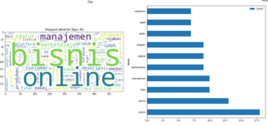
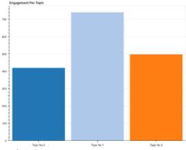
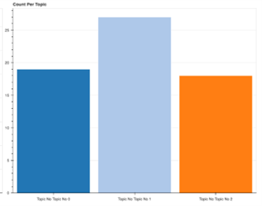
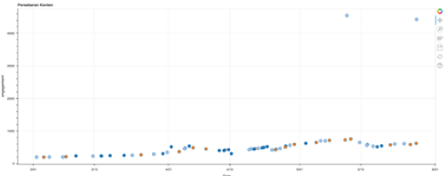
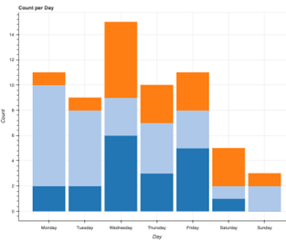
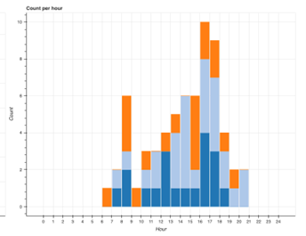

Analisis Konten
untuk akun instagram @atoor.official dengan periode konten dari tanggal 1 Maret 2022 hingga 6 Maret 2022
Topik yang ditemukan Kata yang terlihat mencolok menunjukkan dominansi topik.

Performa Konten Dilihat dari engagement, jumlah konten, dan trend konten per topik.
Engagement per Topik

Jumlah Konten per Topik

Trend Konten

Strategi Unggah Konten Hari dan waktu unggah konten
Hari Unggah Konten

Waktu Unggah Konten
